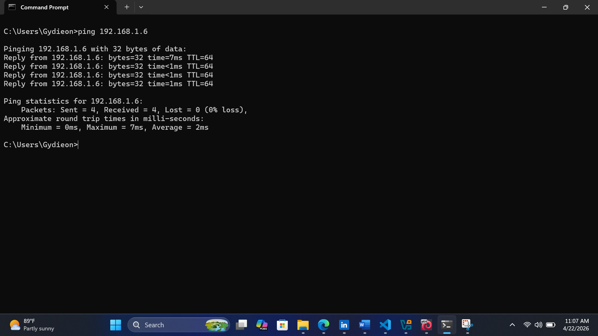
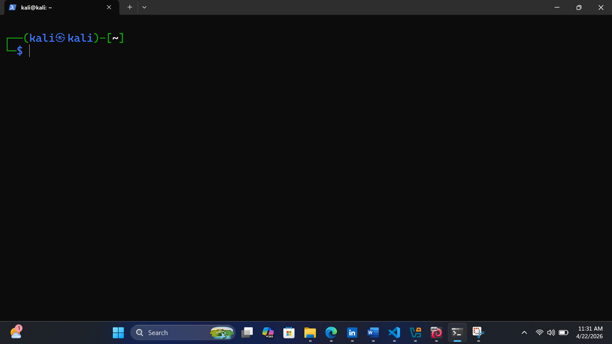
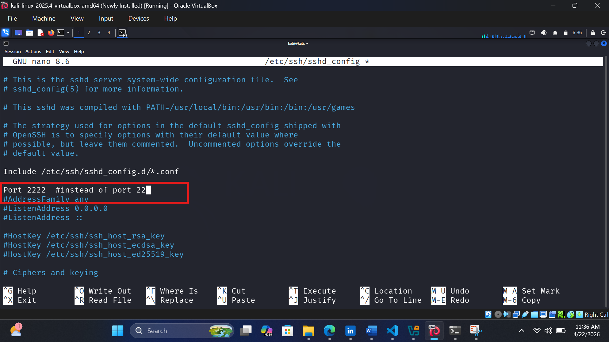
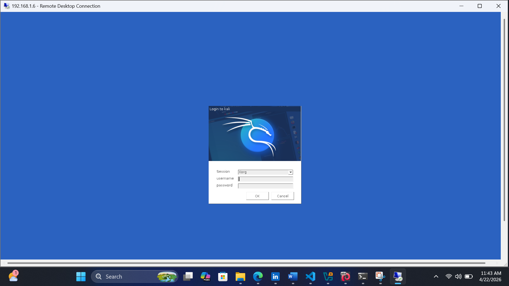
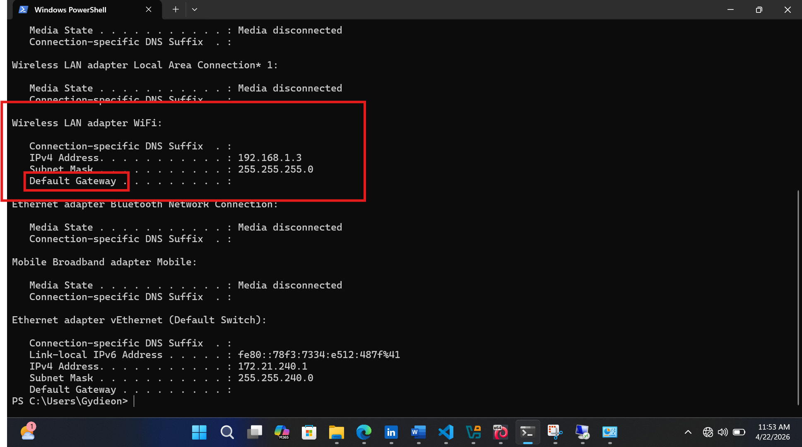
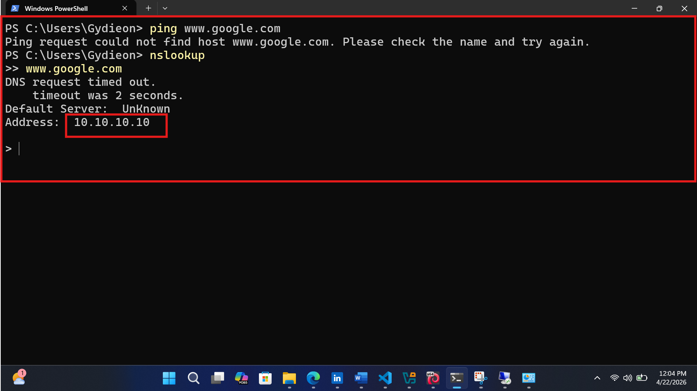
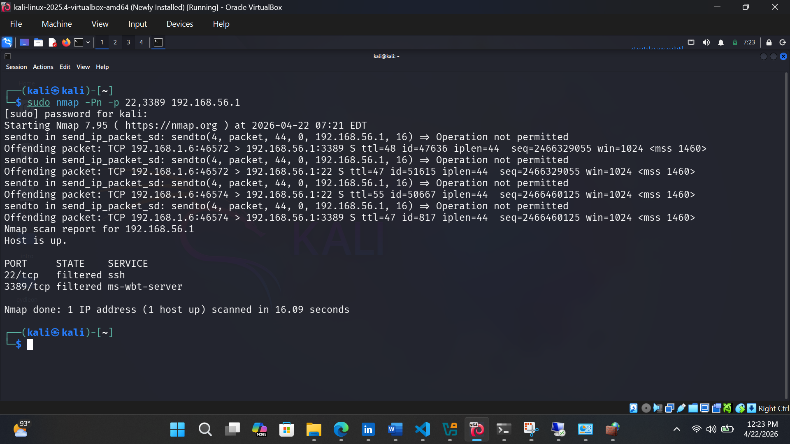

Lab Environment Setup
A virtual lab environment was created using a Kali Linux virtual machine and a Windows host system to simulate real-world network communication. This setup reflects a typical IT support scenario where an administrator uses their local machine to manage and troubleshoot remote systems within a dynamically assigned network environment.
System Configuration
| Machine | Role | IP Address (DHCP) |
|---|---|---|
| Windows (Host Machine) | Admin / Client System | Automatically Assigned |
| Kali Linux (Virtual Machine) | Remote System / Test Environment | Automatically Assigned |
- Configured Kali Linux on a virtual network (Host-Only Adapter)
- Used DHCP to automatically assign IP addresses
- Verified communication between host and virtual machine using ping
Successful Network Connectivity Test

Remote Access Configuration
Remote access technologies were configured to simulate real-world system administration tasks, allowing secure management of a Windows host system from a Kali Linux virtual machine. This setup demonstrates practical use of SSH for remote administration and RDP for graphical access, reflecting enterprise-level IT support operations.
SSH Configuration (Windows → Kali Linux)
Secure remote command-line access from Windows host to Kali Linux VM
SSH Setup & Testing
- Installed and enabled OpenSSH Server on Kali Linux
- Started SSH service (sshd) on Kali system
- Verified SSH service was listening on port 22
- Connected remotely from Windows PowerShell using SSH client
This configuration enables secure remote command-line access from the Windows host machine into the Kali Linux environment. It simulates real-world penetration testing and remote administration tasks commonly performed in enterprise IT and cybersecurity environments.
Successful SSH Login (Windows → Kali Linux)

SSH Troubleshooting Scenario
- Verified SSH service status on Kali using systemctl
- Identified incorrect port configuration (SSH running on non-default port)
- Connection from Windows initially failed due to port mismatch
- Resolved issue by specifying correct port or restarting SSH service
This demonstrates practical troubleshooting of remote access issues, including service verification, port configuration validation, and secure remote connectivity restoration.
Screenshot: SSH Failure and Recovery

Remote Desktop Protocol (RDP)
Graphical remote access from Windows host to Kali Linux VM
RDP Setup & Testing
- Installed and configured xRDP on Kali Linux
- Started and enabled RDP service on Kali system
- Verified RDP port (3389) was open and listening
- Connected from Windows using Remote Desktop Connection tool (mstsc)
- Authenticated using Kali Linux user credentials successfully
This setup enables graphical remote access from a Windows host machine into the Kali Linux environment. It simulates real-world scenarios where administrators or security engineers remotely manage Linux systems using Remote Desktop Protocol for easier graphical interaction.
Successful RDP Connection (Windows → Kali Linux)

RDP Troubleshooting Scenario
- Initially failed to connect due to xRDP service not running on Kali
- Identified service status using systemctl
- Started and enabled xRDP service
- Resolved connection issue and restored remote desktop access
This demonstrates troubleshooting of graphical remote access issues, including service verification, port availability, and authentication validation.
Network Troubleshooting Scenarios
Multiple real-world network issues were intentionally created and resolved using structured troubleshooting techniques similar to those used in IT support environments.
🧪 Scenario: No Internet Connectivity
Issue: No internet access on client machine
- Checked IP configuration using ipconfig
- Identified missing default gateway
- Reconfigured correct gateway
Result: Internet access restored successfully
Screenshot: Missing Gateway Issue

🧪 Scenario: DNS Failure
- Ping to domain failed
- Ping to IP succeeded
- Used nslookup to diagnose DNS issue
- Corrected DNS server
Conclusion: DNS misconfiguration identified and resolved
Screenshot: DNS Resolution Failure

🧪 Scenario: Port Blocking (Firewall)
- Used nmap to scan ports
- Detected closed SSH/RDP ports
- Adjusted firewall rules
Result: Remote services restored
Screenshot: Nmap Scan Results
